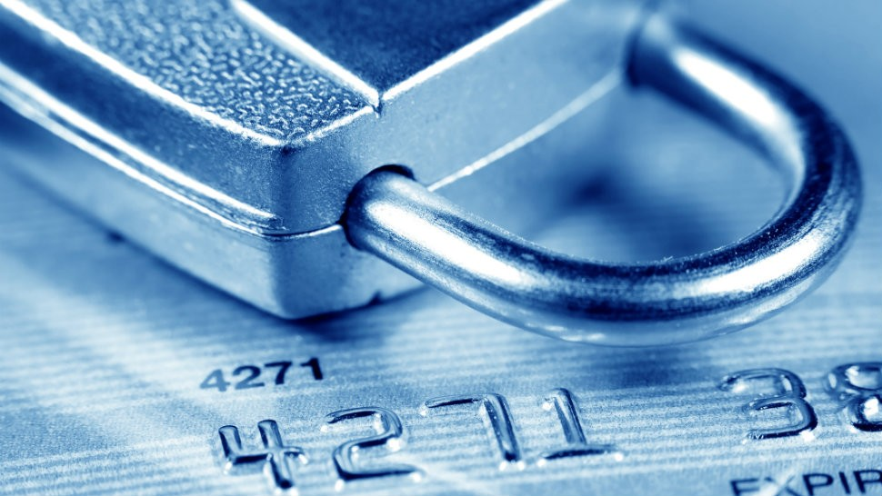

What Is Information Security?
Information security is the act of keeping your own or other peoples data secure from unwanted use by others.
Ways To Keep Your Information Safe Online
- Share what you do on the internet with your family, this is to ensure that the sites you access are safe and appropriate.
- When using a shared computer be careful with what information is on it parents bank details phone numbers and a whole lot more could be on it.

What About Bank Information?
Bank details and phone numbers are commonly auto filled on a lot of browsers meaning you could accidentally pay or sign up for something you don’t want. If you accidentally share this information, make sure to tell a parent or family member.
Be careful what sites you trust on the internet, sometimes websites are made to trick you into clicking on them thinking they are legitimate. These sites are often used to harvest your data as well as tricking people into sending explicit content.
How Does This Apply To Social Media?
On social media sites you may also get set links by then “company” asking you to verify your account or resign. Never use these links if you are unsure always go directly to the site using the url or search bar and report the message. These links are part of a phishing scam which will take you to a fake version of the site, this fake version is used so you enter your password and username/email, so the hacker has full access to your account.
Set all social media to private, if you are using a public account, it means anyone can see your photos and send you messages. Make sure you are on a private account and only accept follow and message requests from people you trust.
Don’t share sensitive information on social media this is dangerous because a hacker could piece together your phone number, address, bank account and etc. This could then be used to stalk you or even take money out of your bank.